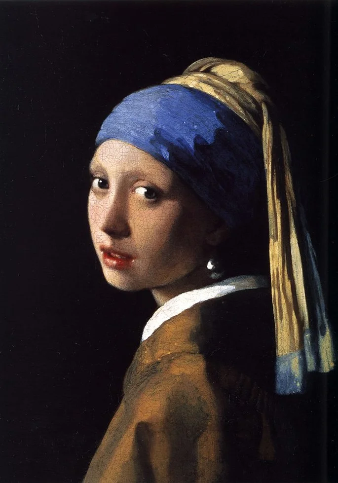

"A Montanha de Saint-Victoire". Embora não seja uma obra
diretamente de van Gogh, é importante notar que ele foi
influenciado por artistas que pintaram essa montanha,
como Paul Cézanne. Van Gogh frequentemente retratava
paisagens e montanhas em suas obras, destacando sua
abordagem única em relação às cores e pinceladas vibrantes.

"A Girl with a Pearl Earring"
é uma famosa pintura feita pelo artista holandês Johannes Vermeer, datada
aproximadamente de 1665. A obra retrata o retrato
de uma jovem mulher, que muitas vezes é chamada de "a menina com o brinco de pérola".